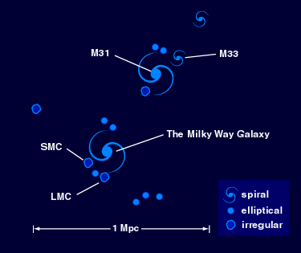
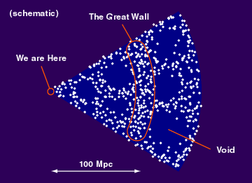
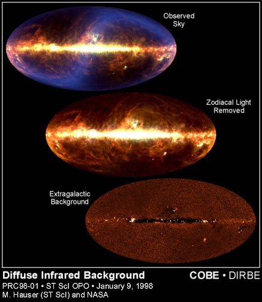
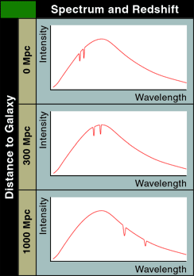
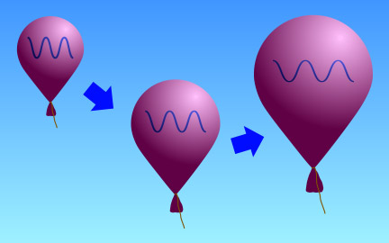
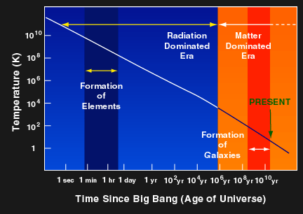
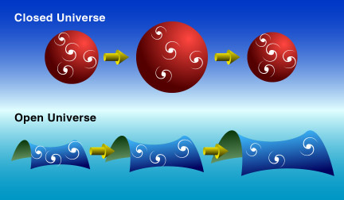
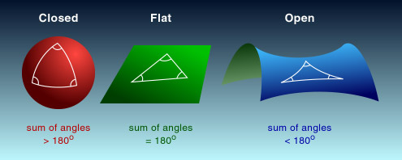
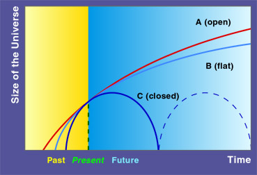

Universality: This is the most basic assumption, some books even do not include it as one of the principles. We assume that the physical laws we discovered on or near the Earth can be applied to anywhere in the universe. Would it be false, we could talk no more about physical astronomy. Studying the properties of stars and galaxies far away confirms this assumption.
Homogeneity: The principle of homogeneity says that the distribution of matter does not vary with position. This is obviously wrong if we look at the local conditions. Most of the mass of our solar system concentrates at the Sun; most stars in our Galaxy are on the galactic disk. Then, in what sense do we take this assumption?

Our Milky Way Galaxy is in a cluster of galaxies, called the Local Group. It contains other galaxies, such as M31, LMC and SMC. Typically, a cluster of galaxies contains 1000 galaxies within a million parsecs. In a larger scale, clusters group together to form superclusters. It contains about 100 clusters in 100 Mpc (mega parsec, a million parsecs). The Local Group and some nearby clusters, like the Virgo Cluster, form a supercluster called the Local Supercluster.
In an even larger scale, recent galaxy survey shows some large scale structures such as the Great Wall and the Voids. Can we conclude that our universe is inhomogeneous? Though more and more evidence points to the existence of the large scale structures, the answer is no. The reason is that the distribution of the largest structures may be uniform. Even if our universe is inhomogeneous, the homogeneity principle can still give us simple models to work with.

Isotropy: Principle of isotropy says that the universe looks roughly the same in every direction. Isotropy is independent of homogeneity. The universe can be homogeneous but non-isotropic or vice versa.
 |
| Courtesy STScI. |
There are many simple but wrong answers to this question. To find out the correct resolution, note that we have to look far away to find a star in most directions. When we look at something far away, we are in fact looking back in time since it takes time for light to travel from the object to us. As a result, we would possibly see back to a time when stars were not formed yet. Then, the sky will be dark at that direction. Here we implicitly use the fact that the universe has a finite age, but how do we know?
We measure the redshift by the following parameter,
For example, if we find that the spectral line of the radiation from a galaxy is of wavelength 515nm, the same spectral line measured on Earth has wavelength 500nm, then the redshift z = 0.03.
For small z, the redshift could be understood as Doppler's effect.
Thus, a galaxy having
positive z means that it is receding from us. If the redshift is
much less than 1, we can calculate the receding velocity
by the following formula
where v is the receding velocity and c is the speed of light. Continuing the above example, the galaxy is moving at a speed of about 9000km/s away from us, if we take the speed of light as 3x108m/s.
If the motions of the galaxies were random, then we would expect
that about half of them would recede from us while half of them would
approach us. However, Hubble found that not only most of them are receding
from us, but also the receding velocity is directly proportional
to the distance away from us
where H is the proportional constant, Hubble's constant. This is known as the Hubble's Law. This means galaxies further away will move away faster. Hubble's constant is very difficult to measure. Different astronomers using different methods have found different values of H. It ranges from 50km/s/Mpc to about 100km/s/Mpc, with the most accepted value around 67km/s/Mpc. If we know the value of the Hubble's constant, we can determine the distance of a galaxy by means of Hubble's Law. In the example above, the galaxy is about 134Mpc from us.

In certain sense, the expansion is similar to the baking of bread. The size of the bread increases and the distances between the raisins also increase. If you sit on one of the raisins, you will see that all the raisins are receding from you. Besides, the farther away a raisin locates, the faster it recedes.
It also explains the cosmological redshift. If the galaxy is far away from us, the light it radiates takes a longer time to reach us. During the time of traveling, the universe expands and stretches out the wavelength of the photons.

The Big Bang Theory can tell us the age of the universe. We know how fast the galaxies are receding from us. So, if we run the movie of the universe backward, we can calculate how long it takes for the galaxies to get back together. From this, the age of the universe is about 14 billion years (1.4 x 1010 yr).

The sum of mass density and the dark energy density determines the future of the universe. The dark energy density is the energy of the vacuum, which is also called the cosmological constant. Although we can measure it, we do not know much about it. The sum is compared to something called the critical density, which is calculated from Hubble's constant. If it is larger, then the universe will eventually stop its expansion and start to collapse. We call it a closed universe. If it is smaller, the universe will expand forever. It is an open universe. We say the universe is flat if the sum is equal to the critical density.

The closed universe is similar to the surface of a sphere, the size is finite. The size of an open universe is infinite and its geometry will be similar to a hyperbolic surface. The geometry of the universe also affects the sum of angles of a triangle, but we will not dive into this issue.

Not only are we not sure what dark energy is, we are also not sure about the nature of the mass density of the universe. The major problem is the existence of dark matter (not dark energy), mainly because we cannot see them. By studying the brightness of Type Ia supernovae very far away, there is some evidence that the sum of the dark energy density and mass density is about equal to the critical density. Hence, we may live in a flat universe (Case B in the figure). Those studies also suggest that the expansion of the universe is accelerating. Its means that not just the size of the universe is increasing, the rate of the increase is getting faster and faster.
